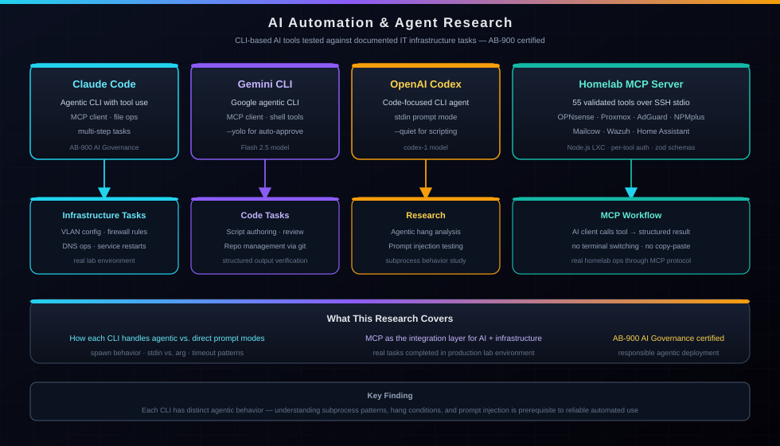

Research | IT Operations Automation
AI Automation & Agent Research
I use CLI-based AI tools and MCP to audit documentation, test services, and run approved infrastructure actions across my lab.

Built: Self-Hosted MCP Server
A self-hosted MCP server running on the homelab for approved infrastructure actions.
Tools Under Research
CLI tools I am testing against documented tasks in the lab.
Claude Code
Using the claude CLI for terminal-based engineering, file editing, custom skills, and MCP server development.
Gemini CLI
Researching the gemini CLI for codebase investigation, multi-turn task orchestration, and MCP server integration as a second AI client.
OpenAI Codex
Testing Codex for GitHub Actions automation and IDE companion workflows.
Practical Applications
Examples where AI tools helped inspect, validate, or update lab infrastructure.
Network Recovery
After a NIC swap broke all 11 VLANs, used AI + MCP tools to diagnose the interface driver change, migrate VLAN parents through the OPNsense API, and correct the DHCP ranges.
Proxy Host Audit
Called npmplus_list_proxyhosts, tested all 28 backends, diagnosed a 404 caused by a wrong path and a 502 caused by a firewall block, then corrected both.
Firewall Debugging
Diagnosed a webmail 502 by listing firewall rules, identifying a RFC1918 block hitting before the pass rule, and re-adding the pass rule with the correct sequence number via API.
Documentation Audits
Using agents to crawl homelab docs, surface stale IPs, and audit all 28 proxy hosts for reachability.
Resume Export
Custom Playwright scripts with AI assistance to measure and export single-page PDFs for ATS and styled resumes.
Diagram Precision
Using AI assistance to fix z-order overlaps, straighten arrows, and align elements in SVG architecture diagrams across 21 files.
Service Operations
Run approved operations such as DNS rewrites, DHCP lease checks, Wazuh alert queries, service restarts, and Uptime Kuma status checks.
Governance — AB-900
Microsoft AB-900 certified: administering and governing Copilot and agent systems with security and compliance in mind.
Related Pages
Live Service Status
API-driven monitor provisioning and operational automation work done with Uptime Kuma.
View project ->Certifications
View my full certification stack, including the Microsoft Fundamentals series and the earned AB-900.
View certs ->All Writeups
See more examples of my technical thinking, from CTF recaps to competition winning strategies.
View writeups ->Enterprise Homelab Architecture
The lab where these agent workflows are tested against real infrastructure tasks.
View project ->Get In Touch
Open to Junior Network Administrator, SOC Analyst, NOC, MSP, Help Desk, IT Support, and Cybersecurity Internship opportunities.
Email: nazeemdickey@masternazz.com | Boynton Beach, FL